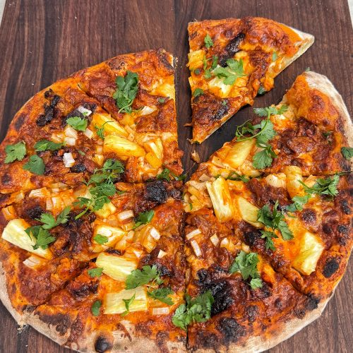
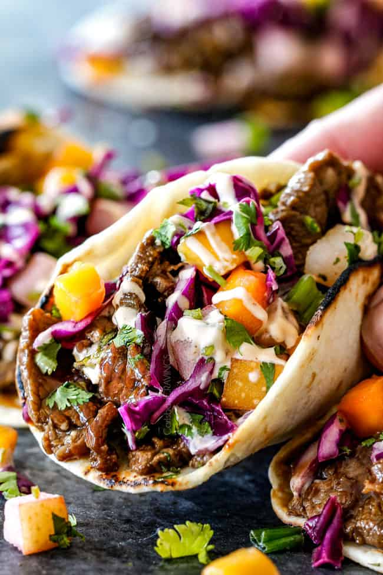
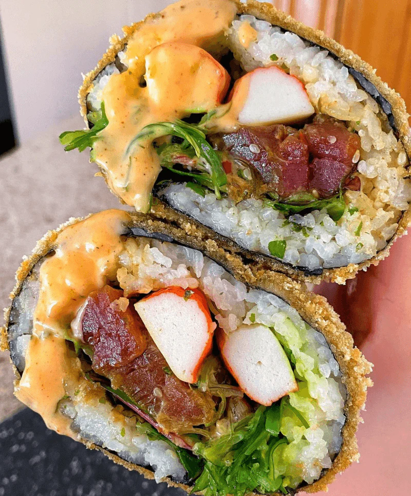
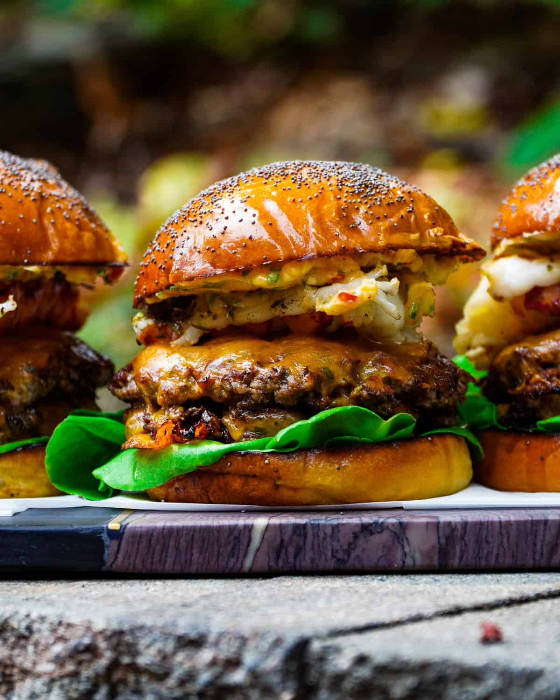

A savory-sweet fusion dish inspired by Mexican street tacos, featuring marinated spit-roasted pork (al pastor), charred pineapple, and Oaxaca or mozzarella cheese
View Full Recipe
A popular Korean-Mexican fusion dish featuring thinly sliced, marinated beef (or pork) that is sweet, savory, and smoky, served in warm corn or flour tortillas
View Full Recipe
A large, hand-held fusion food combining Japanese sushi ingredients like seasoned rice, fresh fish, vegetables, and sauces, rolled inside a large sheet of nori seaweed, similar in size and shape to a Mexican burrito but served uncut, offering a hearty, portable sushi experience
View Full Recipe
A decadent, high-end sandwich combining a juicy beef patty ("turf") with seafood ("surf"), typically shrimp, lobster, or crab, served on a bun
View Full Recipe